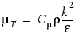
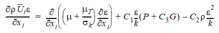
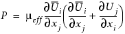
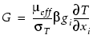

LVEL K-Epsilon Turbulence Model
This turbulence
model calculates two variables; the kinetic energy of turbulence
(k) and the dissipation rate of k (denoted ε).
The eddy viscosity is defined from dimensional analysis as:
|  | (1) |
|---|
The transport equations for k and ε are:
 | (2) |
|---|
 | (3) |
|---|
where P is the shear production defined as:
|  | (4) |
|---|
G is the production of turbulence kinetic energy due to buoyancy, and is given by:
|  | (5) |
|---|
Cμ |
0.09 |
C1 |
1.44 |
C2 |
1.92 |
C3 |
1.0 |
σk |
1.0 |
σε |
1.217 |
This model has been tried and tested for a whole range of engineering applications. It is simple, but more importantly, it is stable. Only two extra differential equations are introduced and the convergence process is less prone to divergence than other, higher order turbulence models.